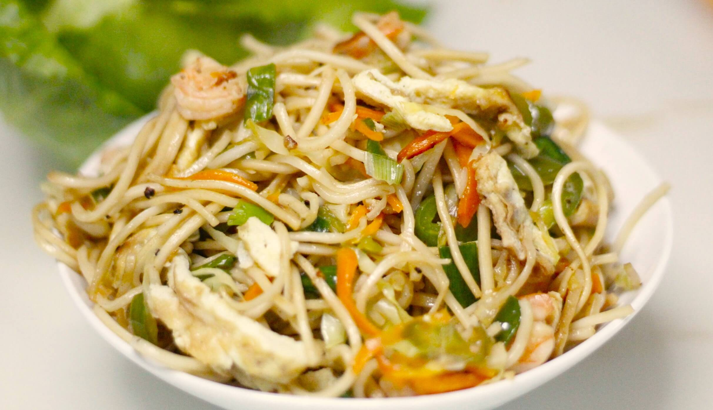

Egg Fried Noodles With Beansprouts

Egg Fried Noodles With Beansprouts
Ingredients
- 2 dried wholemeal noodle nests
- 2 limes, juiced
- 1 tsp tamari
- 2 garlic cloves, 1 finely grated, 1 chopped
- 1 red chilli, deseeded and finely sliced
- 1 tbsp sesame or rapeseed oil
- 2 red onions, (200g), halved and thinly sliced
- 15g ginger, peeled and cut into fine shreds
- 1 small red pepper, deseeded and cut into strips
- 1 tbsp medium curry powder
- 200g ready-to-eat beansprouts, rinsed and drained
- 1 tbsp tahini
- 3 eggs, beaten
- 15g coriander, chopped
Steps
- Cook the noodles following pack instructions. Combine the lime juice, tamari, grated garlic and chilli in a small bowl. Set aside.
- Heat the oil in a non-stick wok or large, wide pan over a high heat and stir-fry the onions, ginger and pepper for 5 mins until softened. Stir in the curry powder and cook for a minute more. Add the beansprouts and continue cooking until the beansprouts start to soften and are piping hot. Mix in the tahini.
- Push the veg to the side of the wok and pour in the egg – you may need a drop more oil. Stir-fry the eggs so they are mostly set, then stir the veg into the egg and add the noodles and coriander, then toss to combine. Pile into bowls and serve with the sauce on the side.